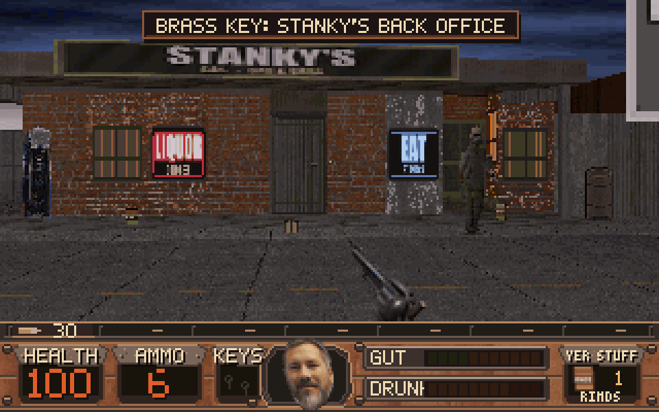

The Hickston Incident
Crazy LegsMundellRampage
Trouble's loose in Hickston County.
A standalone retro first-person shooter through backroad businesses, a crooked county fair, wet timber yards and an illicit quarry operation. Bring twelve weapons, keep an eye on your supplies, and get Bessie home.
v1.4.3 development build
Crazy_
Windows x64 development build. Public v1.4.3 prerelease.

Four stops in the county
Hickston, the fair, the timber yard, and Stillwater Cut.
Out on the road
Silent clips. Scripted source-build capture.
What you carry
- Twelve weapons, from the crowbar and sawed-off to the Bottle Rocket Launcher, Mill Riveter, and Copperhead.
- County Crossroads ties the four chapters. Leave, come back, or replay with a fixed kit.
- Twelve chapter tunes, three a stop, plus title, jukebox, and finale.
- 320×200, pixel lettering, named saves, and separate display, input, and audio settings.
About these pictures
Scripted source-build capture from the published v1.4.3 Linux source. A harness called the game's walk, turn, and fire controls and saved the 320×200 canvas. Stills are a 3× nearest-neighbor scale. Clips are silent. This is not a recording of the Windows EXE and not a person playing.
County Crossroads
The connecting hub, not a fifth chapter. Four road gates link the campaign. Continue in campaign order, suspend a chapter at its return gate, or revisit a completed world.